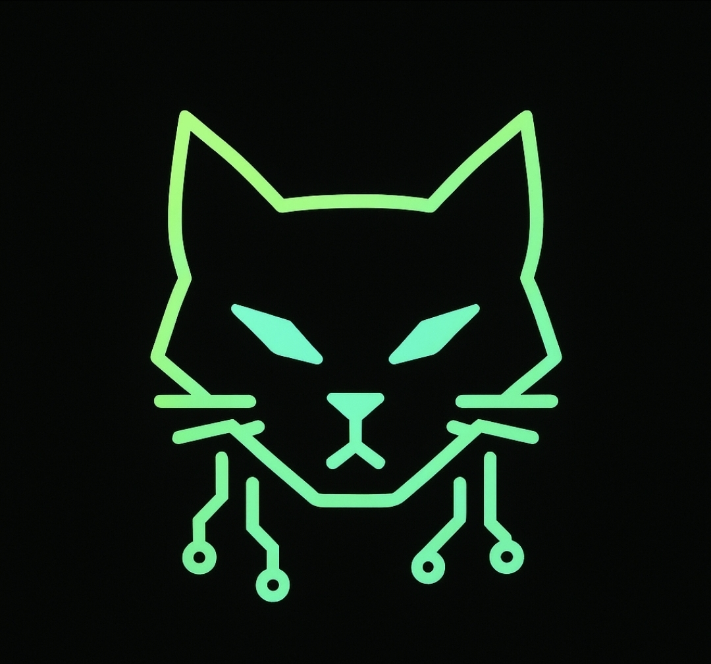

Hi, I’m Packetcat — a technology enthusiast, aspiring cybersecurity analyst, and hands-on problem solver with a passion for understanding how systems work and how to make them better. I’m currently focused on building practical skills in cybersecurity through labs, certifications, and self-directed projects. My experience spans troubleshooting hardware and software, working with Linux environments, and exploring security tools and techniques in controlled lab settings. I enjoy diving into technical challenges, learning new tools, and turning complex problems into clear solutions.
Beyond cybersecurity, I enjoy building things on the web — from small apps to experimental projects — and bringing ideas to life through code and design. I’m especially interested in projects that combine creativity with technology, whether that’s developing useful tools, interactive websites, or digital content. When I’m not working with technology, you’ll usually find me gaming, exploring new tech, or creating content and ideas for future projects. I’m always looking to grow, collaborate, and take on new challenges in the IT and cybersecurity space.
* * *